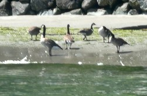

Canada Goose
Branta canadensis
Waterfowl
Family flocks
Shoreline grazer
Common Resident

Quick facts
ID keys
Large gray-brown goose with a long black neck,
black head, and a distinctive white cheek patch.
Their familiar honking calls often announce them
before they come into view.
Size
One of North America’s largest waterfowl, generally
measuring about 30–43 inches long with a broad wingspan.
Habitat
Shorelines, estuaries, wetlands, lakes, lawns,
agricultural areas, and protected coves.
Diet
Primarily grasses, aquatic plants, sedges, berries,
seeds, and agricultural grains.
Behavior
Highly social and often seen in family groups.
During nesting season, adults can be strongly
territorial and devoted defenders of their goslings.
Flight pattern
Migrating flocks often use a V-formation, helping
birds conserve energy by benefiting from air currents
created by the birds ahead.